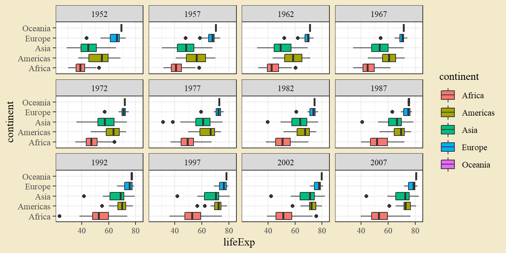
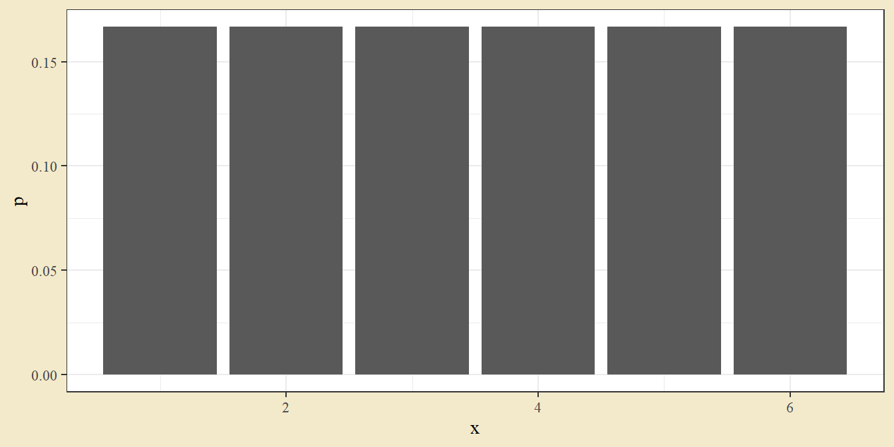
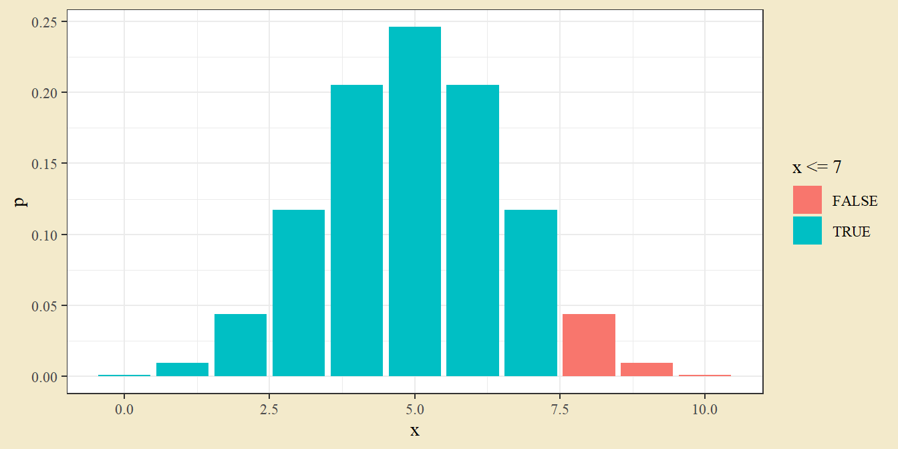
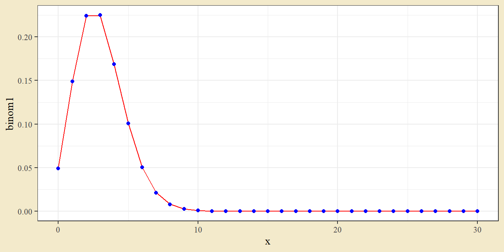
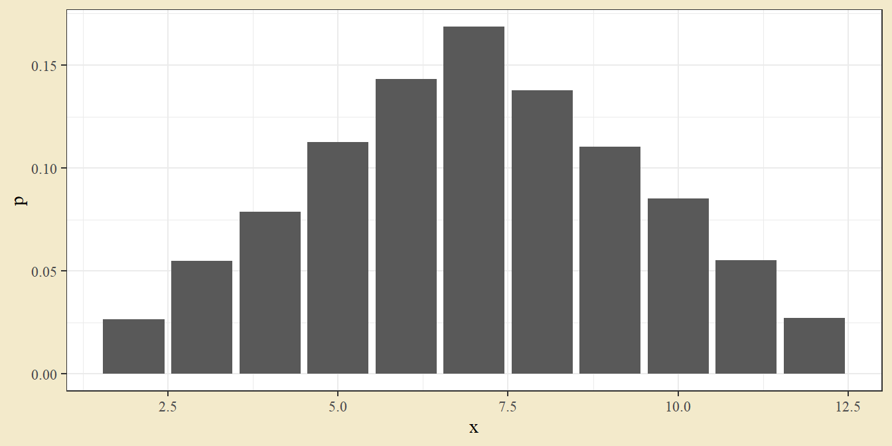
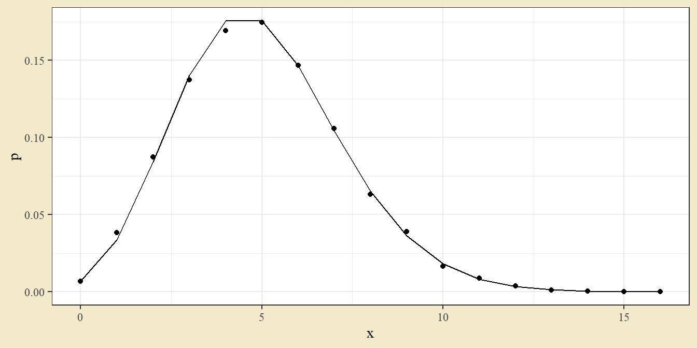
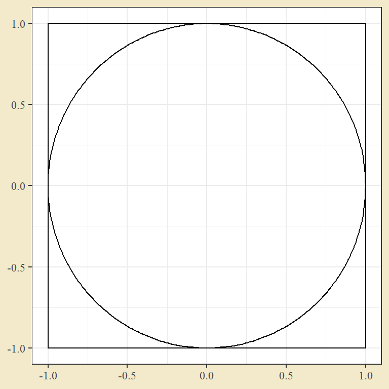
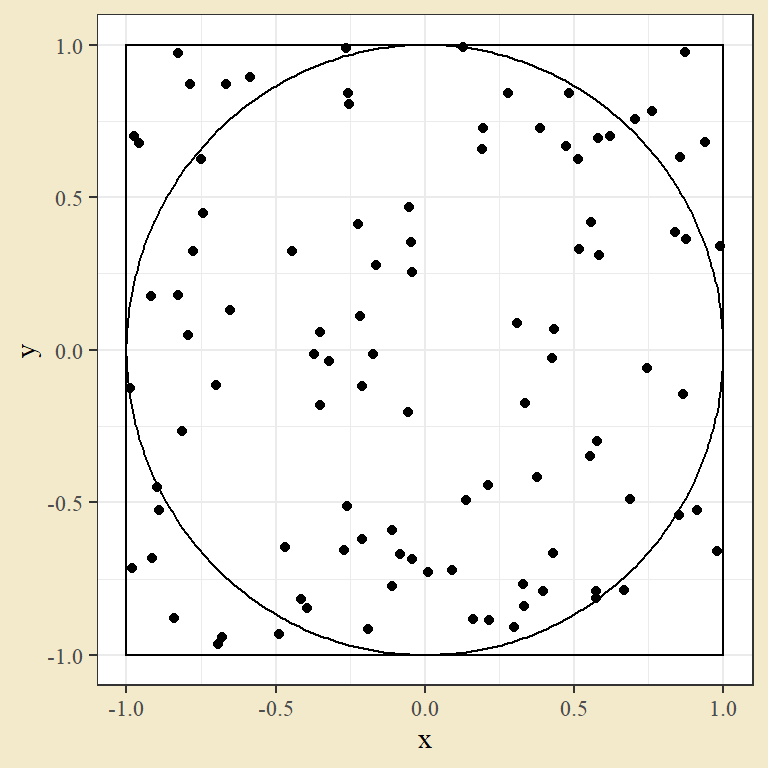

3 Datorövning 3. Diskreta och kontinuerliga slumpvariabler
Datorövning 3 handlar om sannolikhetslära i R. Efter övningen ska vi kunna
Identifiera en passande slumpfördelning för verkliga fenomen,
Beräkna sannolikheter från en antagen fördelning,
Simulera fenomen med en antagen fördelning,
Använda slumptal för att utforska teoretiska resultat från sannolikhetsläran.
3.1 Repetition från datorövning 2
I datorövning 2 tittade vi på hur insamlade variabler kan sammanfattas med lägesmått och spridningsmått. Ett enkelt sätt att ta fram dem är att använda summarise() och ange de mått och variabler man vill använda. Vi hade uppe ett exempel på data från Gapminder som vi importerade från en excel-fil. För nu kan vi dock hämta datan från paketet gapminder.
library(tidyverse)
# install.packages("gapminder")
library(gapminder)
gapminder %>%
filter(year == 2007) %>%
group_by(continent) %>%
summarise(`Livslängd, medel` = mean(lifeExp),
`Befolkning, median` = median(pop),
`Bnp per capita, standardavvikelse` = sd(gdpPercap))## # A tibble: 5 × 4
## continent `Livslängd, medel` `Befolkning, median` `Bnp per capita, standarda…`
## <chr> <dbl> <dbl> <dbl>
## 1 Africa 54.8 10093310. 3618.
## 2 Americas 73.6 9319622 9713.
## 3 Asia 70.7 24821286 14155.
## 4 Europe 77.6 9493598 11800.
## 5 Oceania 80.7 12274974. 6541.Beskrivande mått sammanfattas ofta i någon enkel vetenskaplig graf. Två vanliga val är lådagrammet, som illustrerar kvartiler och möjliga extremvärden, och stapeldiagrammet med felstaplar. Vi ger först ett exempel på ett lådagram över livslängd per kontinent uppdelat efter år.
ggplot(gapminder, aes(lifeExp, continent, fill = continent)) +
geom_boxplot() +
facet_wrap(~ year)
Därefter ett exempel på ett stapeldiagram med felstaplar för samma data. Felstapeln ges av standardavvikelsen.
dat_sum <- gapminder %>%
group_by(continent, year) %>%
summarise(Mean = mean(lifeExp),
SD = sd(lifeExp))
dat_sum## # A tibble: 60 × 4
## # Groups: continent [5]
## continent year Mean SD
## <chr> <dbl> <dbl> <dbl>
## 1 Africa 1952 39.1 5.15
## 2 Africa 1957 41.3 5.62
## 3 Africa 1962 43.3 5.88
## 4 Africa 1967 45.3 6.08
## 5 Africa 1972 47.5 6.42
## 6 Africa 1977 49.6 6.81
## 7 Africa 1982 51.6 7.38
## 8 Africa 1987 53.3 7.86
## 9 Africa 1992 53.6 9.46
## 10 Africa 1997 53.6 9.10
## # … with 50 more rowsggplot(dat_sum, aes(continent, Mean, fill = continent)) +
geom_col() +
geom_errorbar(aes(ymin = Mean - SD, ymax = Mean + SD), width = 0.3) +
facet_wrap(~ year)
3.2 Diskreta fördelningar i allmänhet
En diskret slumpvariabel kan bara anta specifika värden på tallinjen. Det absolut vanligaste fallet är när utfallen är heltal. Tärningskastet med en sex-sidig tärning är ett exempel på en diskret variabel: utfallet är något av 1, 2, 3, 4, 5 och 6. Låt oss börja med att definera en diskret slumpvariabel med tärningskastet som exempel.
Ett kast med en 6-sidig tärning har sex möjliga utfall och (för en balanserad tärning) samma sannolikhet för varje utfall. Eftersom summan av sannolikheter ska bli ett måste sannolikheten för ett specifik utfall vara en sjättedel. Vi kan kodifiera slumpvariabeln i en tabell över utfall och sannolikhet.
dat_dice6 <- data.frame(x = c(1,2,3,4,5,6),
p = 1/6)
dat_dice6## x p
## 1 1 0.1666667
## 2 2 0.1666667
## 3 3 0.1666667
## 4 4 0.1666667
## 5 5 0.1666667
## 6 6 0.1666667En diskret slumpvariabel illustreras ofta med ett stapeldiagram.
ggplot(dat_dice6, aes(x, p)) + geom_col()
Uppgift 3.1 (En annan tärning) Ta fram en tärning som inte har sex sidor. Om du saknar en sådan tärning, fråga lämplig person om du kan få en. Behåll tärningen, då den kan återkomma vid en senare datorövning. Följ exemplet ovan för att kodifiera din tärning som en slumpvariabel. Utfallen x är de möjliga resultaten av att kasta tärningen och sannolikheten p är sannolikheten för varje utfall. Antag att tärningen är balanserad och att alla utfall därför är lika troliga. Ett bra namn på det nya objektet kan vara dat_diceN där N anger antalet sidor på tärningen, t.ex. dat_dice20 för en 20-sidig tärning.
Under tidigare datorövningar såg vi hur man kan beräkna medelvärde och varians från ett stickprov. De måtten kan också beräknas på en teoretisk slumpvariabel. Den här kopplingen mellan beräkningar på ett stickprov och teoretiska egenskaper hos en slumpvariabel är väldigt central inom statistiken, eftersom vårt mål är att koppla verklig data till teoretiska modeller.
För en diskret slumpvariabel ges medelvärdet (som då också kallas populationsmedelvärde, eller vanligare väntevärde) av summan av utfallen gånger sannolikheterna. Vi säger att utfallen vägs med sannolikheterna. För vår tärning kan vi räkna ut det genom att multiplicera utfall och sannolikhet i ett mutate() steg och sedan summera.
dat_dice6 %>%
mutate(x_times_p = x * p) %>%
summarise(Expected_value = sum(x_times_p))## Expected_value
## 1 3.5Notera att medelvärdet inte behöver vara ett möjligt utfall.
Uppgift 3.2 (Medelvärde för din tärning) Upprepa beräkningen ovan, denna gång med den slumpvariabel du kodifierade i den tidigare uppgiften.
Beräkningen av en teoretisk varians (som vi kan kalla populationsvarians) är lite komplicerad. Stegen ges av
- dra ifrån medelvärdet från utfallen,
- kvadrera differenserna,
- multiplicera kvadraterna med sannolikheterna,
- summera produkterna.
För den 6-sidiga tärningen får vi beräkningen nedan. Precis som i fallet med faktiskt data ges standardavvikelsen av roten ur variansen.
dat_dice6 %>%
mutate(mean = sum(x * p)) %>%
mutate(differenser = x - mean,
kvadrater = differenser^2,
produkter = kvadrater * p) %>%
summarise(varians = sum(produkter),
standardavvikelse = sqrt(varians))## varians standardavvikelse
## 1 2.916667 1.707825Uppgift 3.3 (Varians för din tärning) Upprepa beräkningen ovan, denna gång med den slumpvariabel du kodifierade i den tidigare uppgiften.
Vår modell för tärningskastet säger att en serie tärningskast ska ha ett visst medelvärde och varians. Låt oss nu testa det genom att kasta tärning.
Uppgift 3.4 (Kasta tärningen) Kasta din tärning 20 gånger. Gärna på en mjuk yta. Skriv in utfallen i koden nedan och beräkna medelvärde och varians.
utfall <- c(_,_,_,_,_,_,_,_,_,_,_,_,_,_,_,_,_,_,_,_)
mean(utfall)
var(utfall)
sd(utfall)Ligger medelvärde och varians från stickprovet nära de teoretiska beräkningarna?
R kommer också med en rad funktioner för att simulera data. För kontinuerlig data kan man använda funktioner sample() som drar ett valfritt stort urval ur en serie möjlig utfall. Följande kod drar tiotusen slumputfall från en 6-sidig tärning, och beräknar medelvärde och varians.
slumputfall <- sample(x = dat_dice6$x, size = 10000, replace = T)
mean(slumputfall)## [1] 3.5047var(slumputfall)## [1] 2.914269Uppgift 3.5 (Simulera tärningen) Använd sample() för att dra tiotusen observationer från din egen tärning. Beräkna medelvärde och varians från det stickprovet. Är utfallen nära de teoretiska beräkningarna av populationsmedelvärde och -varians?
3.3 Särskilda diskreta fördelningar: binomialfördelning
Vi såg i tärningsexemplet hur en slumpvariabel kan beskrivas med dess sannolikhetsfördelning - variabeln förklaras helt av de möjliga utfallen och sannolikheten för varje utfall. Man kan dock ofta beskriva en slumpvariabel i mindre direkta termer. Ett tärningskast med en 6-sidig tärning kan beskrivas som utfall från 1 till 6 med varje utfall lika sannolikt och ett tärningskast med en 20-sidig tärning kan beskrivas som utfall från 1 till 20 med varje utfall lika sannolikt. Slumpvariablerna kan alltså beskrivas på ett tydligt sätt utifrån den bakomliggande processen. Den här typen av variabler är ofta parametriserade - det finns någon aspekt av processen som beskrivs med en bestämd siffra (6 respektive 20 för de bägge tärningskasten).
Ett vanligt exempel på en sådan parametriserad fördelning är en binomialfördelning. En binomialfördelning uppstår när man har upprepningar av en binär händelse (en händelse som antingen inträffar eller inte inträffar) och räknar antalet positiva utfall (positiva i klinisk mening som något utfall man är intresserad av). I en binomialfördelning ges antalet upprepningar av en parameter n och sannolikheten för ett positivt utfall i en händelse av en parameter p.
Som exempel kan vi ett myntkast. Om man singlar ett balanserat mynt tio gånger kommer antalet krona (vårt positiva utfall) följa en binomialfördelning där n ges av 10 och p av 0.5. I R kan sannolikheter från en binomialfördelning tas fram med dbinom(). Sannolikheten för tre krona ges till exempel av
dbinom(3, size = 10, prob = 0.5)## [1] 0.1171875Om vi vill illustrera en binomalfördelning kan vi ta fram sannolikheterna för varje utfall och göra ett stapeldiagram.
dat_bin <- data.frame(x = 0:10) %>%
mutate(p = dbinom(x, size = 10, prob = 0.5))
ggplot(dat_bin, aes(x, p)) + geom_col()Uppgift 3.6 (Binomialfördelning för tärningen) Ta tärningen från tidigare uppgift och välj ett av utfallen. Om man kastar tärningen tjugo gånger, vad är fördelningen för antalet gånger man får det utfallet? Fyll i stycket nedan för att beräkna sannolikheterna i den fördelningen och illustrera med ett stapeldiagram.
dat_bin <- data.frame(x = 0:20) %>%
mutate(p = dbinom(x, size = 20, prob = ___))
ggplot(dat_bin, aes(x, p)) + geom_col()Uppgift 3.7 (Sannolikheter i binomialen) I den fördelning du beräknade i uppgiften ovan. Vad är sannolikheten att få exakt tre positiva utfall?
Utöver sannolikhetsfunktionen (som ger sannolikheten för varje utfall) används ofta också fördelningsfunktionen (som för varje utfall ger sannolikheten att ligga exakt på eller under ett specifikt värde). Fördelningsfunktionen används vid sannolikhetsberäkningar, t.ex. är de tabeller för fördelningar man ofta ser i slutet av statistikböcker på fördelningsformen.
I R beräknas fördelningsfunktionen med pbinom(). För fallet med tio slantsinglingar kan man ta
dat_bin <- data.frame(x = 0:10) %>%
mutate(p = dbinom(x, size = 10, prob = 0.5),
P = pbinom(x, size = 10, prob = 0.5))
dat_bin## x p P
## 1 0 0.0009765625 0.0009765625
## 2 1 0.0097656250 0.0107421875
## 3 2 0.0439453125 0.0546875000
## 4 3 0.1171875000 0.1718750000
## 5 4 0.2050781250 0.3769531250
## 6 5 0.2460937500 0.6230468750
## 7 6 0.2050781250 0.8281250000
## 8 7 0.1171875000 0.9453125000
## 9 8 0.0439453125 0.9892578125
## 10 9 0.0097656250 0.9990234375
## 11 10 0.0009765625 1.0000000000Fördelningsfunktionen ges av att summera sannolikhetsfunktionen uppifrån.
Uppgift 3.8 (Fördelningsfunktion i binomialen) Använd binomialfördelningen från den tidigare uppgiften till att beräkna sannolikheten att få tre eller färre positiva utfall.
Vi kan använda ett logiskt uttryck för att illustrera sannolikheter i stapeldiagrammet. Om vi vill beräkna och illustrera sannolikheten för sju eller färre positiva utfall i exemplet med mynten kan vi använda följande.
pbinom(7, size = 10, prob = 0.5)## [1] 0.9453125dat_bin <- data.frame(x = 0:10) %>%
mutate(p = dbinom(x, size = 10, prob = 0.5),
P = pbinom(x, size = 10, prob = 0.5))
ggplot(dat_bin, aes(x, p, fill = x <= 7)) +
geom_col()
Den blå ytan motsvarar sannolikheten att få sju eller färre krona. Den sannolikheten kan beräknas till 0.945.
Uppgift 3.9 (Illustration av sannolikheten) För en sexsidig tärning illustrerar följande sannolikheten att få tre eller färre sexor vid tjugo kast.
pbinom(3, size = 20, prob = 1/6)## [1] 0.5665456dat_bin <- data.frame(x = 0:20) %>%
mutate(p = dbinom(x, size = 20, prob = 1 / 6))
ggplot(dat_bin, aes(x, p, fill = x <= 3)) +
geom_col()
Gör lämpliga ändringar i kodstycket ovan för att illustrera sannolikheten att få tre eller färre positiva utfall i exemplet med tärningskastet.
Uppgift 3.10 (Teori och verklighet) I en tidigare uppgift kastade du tärningen tjugo gånger. Hur många gånger fick du det lägsta möjliga utfallet på tärningen (t.ex. en etta på en vanlig sex-sidig tärning). Vad är sannolikheten att få så många positiva utfall i binomialexemplet på tärningen?
I det första exemplet med tärningen kunde vi beräkna väntevärde och varians med de allmäna formlerna. För parametriserade fördelningar som binomialfördelningen finns ofta enklare formler som helt beror på parametrarna. I en binomial ges populationsmedelvärdet av antalet upprepningar gånger sannolikheten (n gånger p) och variansen av antalet upprepningar gånger sannolikheten gånger ett-minus-sannolikheten (n gånger p gånger (1 - p)). För myntkastet (n = 10 och p = 0.5) ges medelvärdet av 5 och variansen av 2.5.
Uppgift 3.11 (Medelvärde och varians i binomialen) Beräkna medelvärde och varians för antalet ettor om man kastar en sex-sidig tärning tjugo gånger.
3.4 Särskilda diskreta fördelningar: poissonfördelning
En poissonfördelning är en vanlig sannolikhetsfördelning för antalsdata (alltså data som antar positiva heltal som 0, 1, 2, 3 och så vidare). Poissonfördelningen har en nära koppling till binomialfördelningen.
Om man tittar på binomialfördelningar med stort antal upprepningar och en låg sannolikhet för ett positivt utfall kan man observera att intressant fenomen: binomialfördelningar med samma medelvärde är väldigt lika. Ta som exempel en binomial med n = 5000 och p = 0.0006 och en annan binomialfördelning med n = 400 och p = 0.0075. Bägge fördelningarna har medelvärde 3 (ta n gånger p för att bekräfta det). Vi kan beräkna sannolikhetsfördelningen med dbinom().
dat_two_bin <- data.frame(x = 0:30) %>%
mutate(binom1 = dbinom(x, size = 5000, p = 0.0006),
binom2 = dbinom(x, size = 400, p = 0.0075),
Differens = binom1 - binom2)
dat_two_bin## x binom1 binom2 Differens
## 1 0 4.974226e-02 4.922732e-02 5.149444e-04
## 2 1 1.493164e-01 1.487979e-01 5.184384e-04
## 3 2 2.240642e-01 2.243213e-01 -2.571164e-04
## 4 3 2.241090e-01 2.248864e-01 -7.773178e-04
## 5 4 1.680818e-01 1.686648e-01 -5.829883e-04
## 6 5 1.008289e-01 1.009440e-01 -1.150660e-04
## 7 6 5.039427e-02 5.021771e-02 1.765560e-04
## 8 7 2.158458e-02 2.135924e-02 2.253344e-04
## 9 8 8.087737e-03 7.929013e-03 1.587236e-04
## 10 9 2.693215e-03 2.609717e-03 8.349753e-05
## 11 10 8.069943e-04 7.710827e-04 3.591159e-05
## 12 11 2.197810e-04 2.065873e-04 1.319374e-05
## 13 12 5.485730e-05 5.060608e-05 4.251211e-06
## 14 13 1.263658e-05 1.141358e-05 1.222996e-06
## 15 14 2.702419e-06 2.384161e-06 3.182579e-07
## 16 15 5.392940e-07 4.636202e-07 7.567378e-08
## 17 16 1.008748e-07 8.430121e-08 1.657358e-08
## 18 17 1.775512e-08 1.438954e-08 3.365583e-09
## 19 18 2.950896e-09 2.313683e-09 6.372131e-10
## 20 19 4.645324e-10 3.515154e-10 1.130169e-10
## 21 20 6.945674e-11 5.060229e-11 1.885446e-11
## 22 21 9.888636e-12 6.919348e-12 2.969288e-12
## 23 22 1.343593e-12 9.007670e-13 4.428260e-13
## 24 23 1.745849e-13 1.118683e-13 6.271657e-14
## 25 24 2.173577e-14 1.327908e-14 8.456687e-15
## 26 25 2.597331e-15 1.509199e-15 1.088131e-15
## 27 26 2.983726e-16 1.644884e-16 1.338842e-16
## 28 27 3.299992e-17 1.721765e-17 1.578227e-17
## 29 28 3.518724e-18 1.733227e-18 1.785497e-18
## 30 29 3.621848e-19 1.680084e-19 1.941763e-19
## 31 30 3.603003e-20 1.570054e-20 2.032949e-20Vi kan illustrera de två fördelningarna i en graf. Den ena fördelningen illustreras med en linje och den andra som punkter, för att kunna se bägge fördelningarna i en bild.
ggplot(dat_two_bin) +
geom_line(aes(x, binom1), color = "red") +
geom_point(aes(x, binom2), color = "blue")
Punkterna ligger nästan perfekt på linjen. De två fördelningarna har alltså nästan samma sannolikheter, trots att de har helt olika värden för n och p.
Uppgift 3.12 (Skilda sannolikheter) Följande kod gör samma sak som exemplet ovan, men nu med n1 och n2 som egna objekt.
n1 <- 5000
n2 <- 400
dat_two_bin <- data.frame(x = 0:30) %>%
mutate(binom1 = dbinom(x, size = n1, p = 3 / n1),
binom2 = dbinom(x, size = n2, p = 3 / n2),
Differens = binom1 - binom2)
dat_two_bin
ggplot(dat_two_bin) +
geom_line(aes(x, binom1), color = "red") +
geom_point(aes(x, binom2), color = "blue")Ändra värdena för n1 och n2 och gör om grafen. Vad händer när antalet upprepningar blir lägre, t.ex 50 och 20 - ligger punkterna fortfarande över linjen?
Det här fenomenet - att binomialfördelningar med samma medelvärde, högt n och lågt p ger liknande sannolikheter - är ett uttryck för ett teoretiskt resultat som säger att en binomalfördelning går mot en poissonfördelning när n ökar och p minskar. Det innebär att en poissonfördelning är en lämplig fördelning för händelser som har många upprepningar men låg sannolikhet att inträffa i det enskilda försöket. Typexempel är olika typer av olyckor. Ett av de första historiska exemplet på beräkningar med en poissonfördelning kommer från Preussen under 1800-talet och handlar om soldater som dött i höstoyckor. Där är antalet försök stort (soldater var ofta nära hästar) men sannolikheten låg i varje enskild interaktion.
Poissonfördelningen styrs av en enda parameter, lambda. Parametern lambda är lika med fördelningens medelvärde och varians. Till skillnad från en binomialfördelning, där det högsta möjliga utfall ges av n, har en poissonfördelning inget maxvärde. Man kan i teorin få vilket positivt heltalsutfall som helst.
Vi gör om jämförelse mellan två fördelning, men nu jämför vi med en poissonfördelning med lambda lika med 3.
dat_two_dist <- data.frame(x = 0:30) %>%
mutate(pois = dpois(x, lambda = 3),
binom = dbinom(x, size = 400, p = 0.0075),
Differens = binom - pois)
dat_two_dist## x pois binom Differens
## 1 0 4.978707e-02 4.922732e-02 -5.597505e-04
## 2 1 1.493612e-01 1.487979e-01 -5.632670e-04
## 3 2 2.240418e-01 2.243213e-01 2.795172e-04
## 4 3 2.240418e-01 2.248864e-01 8.445584e-04
## 5 4 1.680314e-01 1.686648e-01 6.334188e-04
## 6 5 1.008188e-01 1.009440e-01 1.251423e-04
## 7 6 5.040941e-02 5.021771e-02 -1.916958e-04
## 8 7 2.160403e-02 2.135924e-02 -2.447891e-04
## 9 8 8.101512e-03 7.929013e-03 -1.724984e-04
## 10 9 2.700504e-03 2.609717e-03 -9.078666e-05
## 11 10 8.101512e-04 7.710827e-04 -3.906847e-05
## 12 11 2.209503e-04 2.065873e-04 -1.436301e-05
## 13 12 5.523758e-05 5.060608e-05 -4.631496e-06
## 14 13 1.274713e-05 1.141358e-05 -1.333555e-06
## 15 14 2.731529e-06 2.384161e-06 -3.473679e-07
## 16 15 5.463057e-07 4.636202e-07 -8.268556e-08
## 17 16 1.024323e-07 8.430121e-08 -1.813111e-08
## 18 17 1.807629e-08 1.438954e-08 -3.686754e-09
## 19 18 3.012715e-09 2.313683e-09 -6.990323e-10
## 20 19 4.756919e-10 3.515154e-10 -1.241765e-10
## 21 20 7.135379e-11 5.060229e-11 -2.075150e-11
## 22 21 1.019340e-11 6.919348e-12 -3.274050e-12
## 23 22 1.390009e-12 9.007670e-13 -4.892419e-13
## 24 23 1.813055e-13 1.118683e-13 -6.943717e-14
## 25 24 2.266319e-14 1.327908e-14 -9.384107e-15
## 26 25 2.719583e-15 1.509199e-15 -1.210383e-15
## 27 26 3.137980e-16 1.644884e-16 -1.493096e-16
## 28 27 3.486644e-17 1.721765e-17 -1.764879e-17
## 29 28 3.735690e-18 1.733227e-18 -2.002463e-18
## 30 29 3.864507e-19 1.680084e-19 -2.184423e-19
## 31 30 3.864507e-20 1.570054e-20 -2.294454e-20ggplot(dat_two_dist) +
geom_line(aes(x, pois), color = "red") +
geom_point(aes(x, binom), color = "blue")
Den röda linjen är poissonfördelningen och de blå punkterna är en binomialfördelning med n = 400 och p = 0.0075. Fördelningarna är nästan identiska. Notera att fördelningarna har samma medelvärde (då 400 gånger 0.0075 ger 3).
Uppgift 3.13 (Skilda sannolikheter) Följande kod gör samma sak som exemplet ovan, men nu med n i binomial som eget objekt.
n <- 400
dat_two_dist <- data.frame(x = 0:30) %>%
mutate(pois = dpois(x, lambda = 3),
binom = dbinom(x, size = n, p = 3 / n),
Differens = binom - pois)
dat_two_dist
ggplot(dat_two_dist) +
geom_line(aes(x, pois), color = "red") +
geom_point(aes(x, binom), color = "blue")Från statistisk teori tror vi att skillnaden mellan poissonfördelninen och binomialen växer när antalet upprepningar är litet. Vad händer när antalet upprepningar blir lägre, t.ex 50 eller 20 - ligger punkterna fortfarande över linjen? Vad händer om man ändrar medelvärdet (vilket här är tre). Notera att man då måste ändra i poissonfördelning och binomialfördelning eftersom vi vill jämföra fördelningar med samma medelvärde.
I R kan man beräkna sannolikheter för en poissonfördelning med dpois() och ppois().
Uppgift 3.14 (Sannolikhetsfunktionen för en poisson) Följande ger sannolikheten att få utfall 2 i en poissonfördelning med lambda satt till 4.
dpois(2, lambda = 4)## [1] 0.1465251Gör lämpliga ändringar för att beräkna sannolikheten för exakt 5 i en fördelning med lambda satt till 3.
Uppgift 3.15 (Fördelningsfunktionen för en poisson) Följande ger sannolikheten att få mindre än eller lika med 2 i en poissonfördelning med lambda satt till 4.
dpois(2, lambda = 4)## [1] 0.1465251Gör lämpliga ändringar för att beräkna sannolikheten för mindre än eller lika med 5 i en fördelning med lambda satt till 3. Hur kan man beräkna sannolikheten att få mer än 5 i en fördelning med lambda satt till 3?
3.5 Kontinuerliga fördelningar i allmänhet
En kontinuerlig fördelning kan anta vilka värden som helst på hela tallinjen eller i något intervall på tallinjen. Ett enkelt exempel på en kontinuerlig slumpvariabel kan vara att stoppa ett stoppur slumpmässigt och titta på decimaldelen. Det kommer ge något värde mellan 0 och 1. (Stoppuret kommer naturligtvis avrunda värdet, så man får tänka sig ett magiskt stoppur med oändligt antal decimaler.) Till skillnad från en diskret slumpvariabel, som kan beskrivas med utfallen och dess sannolikheter, måste en kontinuerlig variabel förklaras med en matematisk funktion, en så kallad täthetsfunktion. Detta beror på att enskilda utfall alltid har sannolikhet noll för en kontinuerlig fördelning: om man har oändligt antal decimaler är det som exempel sannolikhet noll att få exakt 0.345000 som decimaler på ett stoppur.
Den absolut vanligaste kontinuerliga fördelningen är en normalfördelning.
3.6 Särskilda kontinuerliga fördelningar: normalfördelningen
En normalfördelning är en kontinuerlig fördelning some kan anta värden över hela tallinjen och beror på två parametrar: mu som styr var fördelningens är centrerad, och sigma som styr hur utspridd fördelningen är.
En normalfördelning har en karaktäristisk klockform. Vi illustreras två normalfördelningar med hjälp av geomet geom_function() i en ggplot.
ggplot() +
geom_function(fun = dnorm, args = list(mean = 5, sd = 2), color = "red", size = 2) +
geom_function(fun = dnorm, args = list(mean = 3, sd = 1), color = "blue", size = 2) +
geom_function(fun = dnorm, args = list(mean = 5, sd = 1), color = "green3", size = 2) +
xlim(0, 10)Den gröna och röda kurvan har samma medelvärde mu men skilda standardavvikelser sigma. Den blå och gröna kurvan har skilda medelvärden mu men samma standardavvikelse sigma.
Uppgift 3.16 (Normalfördelningar) Gör lämpliga ändringar i stycken ovan för att illustrera två normalfördelningar: en med medelvärde 0 och standardavvikelse 1 och en med medelvärde 1 och standardavvikelse 2. Kan du utifrån kurvorna säga vilken av de två fördelningarna som ger störst sannolikhet att få ett utfall under minus två?
Kurvorna illustrerar täthetsfunktionen. I en kontinuerlig fördelning har täthetsfunktionen ingen tolkning i termer av sannolikheter. För att kunna förstå i normalfördelning behöver vi titta på fördelningsfunktionen. Kom ihåg från det diskreta fallet att fördelningsfunktionen anger sannolikheten för exakt lika eller under ett givet värde. Samma sak gäller för en kontinuerlig variabel. Fördelningsfunktionen värde ges av pnorm(). Om vi vill beräkna sannolikheten att ligga under 1 i en normalfördelning med medelvärde 2 och standardavvikelse 3 tar vi
pnorm(1, mean = 2, sd = 3)## [1] 0.3694413Vi kan ta fram en illustration med följande kod. Detaljer spelar mindre roll här, men gör gärna några ändringar i x_value, mu och sigmaför att se hur grafen ändras. Om paketet patchwork inte är installerat, kör raden som här är utkommenterad med #.
x_value <- 1
mu <- 2
sigma <- 3
P_value <- pnorm(x_value, mean = mu, sd = sigma)
P_value## [1] 0.3694413dat_norm <- data.frame(x = seq(from = mu - 4 * sigma, to = mu + 4 * sigma, 0.1)) %>%
mutate(p = dnorm(x, mean = mu, sd = sigma),
P = pnorm(x, mean = mu, sd = sigma))
g1 <- ggplot(dat_norm, aes(x, p)) +
geom_line() +
geom_ribbon(aes(ymin = 0, ymax = p), data = dat_norm %>% filter(x < x_value), fill = "salmon", color = "black") +
labs(title = "Täthetsfunktion")
g2 <- ggplot(dat_norm, aes(x, P)) +
geom_line() +
annotate("segment", x = x_value, y = 0, xend = x_value, yend = P_value) +
annotate("segment", x = x_value, y = P_value, xend = -Inf, yend = P_value) +
labs(title = "Fördelningsfunktion")
# install.packages("patchwork")
library(patchwork)
g1 / g2
Sannolikheten att ligga under ett värde på x ges av kurvan för fördelningsfunktionen vid det x-värdet. Det motsvarar den fyllda ytan under täthetsfunktionen till vänster om x-värdet.
Uppgift 3.17 (Sannolikhet från normalfördelningen) Fyll i kodstycket nedan för att beräkna sannolikheten att få ett värde under minus två i en normalfördelning med medelvärde 0 och standardavvikelse 1, och i en normalfördelning med medelvärde 1 och standardavvikelse 2.
pnorm(1, mean = ___, sd = ___)
pnorm(1, mean = ___, sd = ___)Ändra kodstycket från exemplet ovan för att illustrera sannolikheterna i uppgiften.
Om man vill ta fram en sannolikhet att ligga i ett visst intervall kan man ta skillnaden mellan två värden från fördelningsfunktionen. Sannolikheten att ligga mellan 1 och minus 1 i en normalfördelning med medelvärde 0 och standardavvikelse 1 ges till exempel av
pnorm(1, mean = 0, sd = 1) - pnorm(-1, mean = 0, sd = 1)## [1] 0.6826895Den normalfördelningen (medelvärde 0 och standardavvikelse 1) kallas den standardiserade normalfördelning. Vi kan illustrerade med följande.
x_values <- c(-1,1)
mu <- 0
sigma <- 1
dat_norm <- data.frame(x = seq(from = mu - 4 * sigma, to = mu + 4 * sigma, 0.1)) %>%
mutate(p = dnorm(x, mean = mu, sd = sigma))
ggplot(dat_norm, aes(x, p)) +
geom_line() +
geom_ribbon(aes(ymin = 0, ymax = p), data = dat_norm %>% filter(x < max(x_values) & x > min(x_values)), fill = "salmon", color = "black") +
labs(title = "Täthetsfunktion")Uppgift 3.18 (Sannolikhet mellan två värden) Fyll i kodstycket nedan för att beräkna sannolikheten att få ett värde mellan minus två och tre i en normalfördelning med medelvärde 1 och standardavvikelse 2.
pnorm(___, mean = ___, sd = ___) - pnorm(___, mean = ___, sd = ___)Fördelningsfunktionen ger sannolikheten att ligga under ett visst x-värde. Man kan enkelt beräkna sannolikheten att ligga över värdet genom att ta ett minus fördelningsfunktionen. Sannolikheten att ligga över 1.96 i en standardiserad normalfördelning ges till exempel av ungeför 2.5 procent.
1 - pnorm(1.96)## [1] 0.0249979Uppgift 3.19 (Sannolikhet över x) Fyll i kodstycket nedan för att beräkna sannolikheten att få ett värde över sju i en normalfördelning med medelvärde 3 och standardavvikelse 5.
1 - pnorm(___, mean = ___, sd = ___)En normalfördelning kan transformeras till en annan normal genom att addera och multiplicera med någon konstant. Mer specifik kan vilken normalfördelning som helst återföras till en standardiserad normalfördelning genom att dra ifrån medelvärdet och dela med standardavvikelsen. Det här utnyttjas när man beräknar sannolikheter för hand. Säg till exempel att vi har en normalfördelning med medelvärde 8 och standardavvikelse 4, och vi vill ta fram sannolikheten att ligga under 7. Det kan beräknas med
pnorm(7, mean = 8, sd = 4)## [1] 0.4012937Alternativt kan man standardiserade genom att att ta 7 minus 8, delat på 4, vilket ger (7 - 8) / 4 = -0.25, och sedan göra sannolikhetsberäkningen i den standardiserade normalen.
pnorm(-0.25, mean = 0, sd = 1)## [1] 0.4012937Uppgift 3.20 (Standardisering) Fyll i kodstycket nedan för att beräkna sannolikheten att få ett värde under sju i en normalfördelning med medelvärde 3 och standardavvikelse 5. Genomför beräkningen genom att standardiserade och beräkna sannolikheten från den standardiserade normalen.
pnorm(___, mean = 0, sd = 1)3.7 Bonus. Summan av två slumpvariabler med slumptal
Utöver funktioner för sannolikhetsfunktion (eller täthetsfunktion) och fördelningsfunktion (som dbinom(), dpois(), dnorm(), respektive pbinom(), ppois(), pnorm()) har R funktioner för att ta fram slumptal (rbinom(), rpois(), rnorm()). Slumptal kan vara användbara för att undersöka egenskaper hos en slumpprocess.
Låt oss som ett första exempel undersöka egenskaper hos poissonfördelningen genom att titta på följande fråga: om vi har två poissonfördelningar, med lambda 3 respektive 2, vilken fördelning har summan av de två fördelningarna? Vi kan t.ex. tänka oss att antalet blåsippor i en försöksruta är poissonfördelat med medelvärde 3 och antalet vitsippor är poissonfördelat med medelvärde 2, och att vi vill veta fördelningen för antalet blåsippor plus antalet vitsippor.
Vi börjar med att dra slumptal för en poissonfördelning med lambda lika med 3 och jämför slumptalen med en teoretisk fördelning.
dat_pois <- data.frame(x = rpois(10000, lambda = 3)) %>%
count(x) %>%
mutate(p = n / sum(n),
theoretical_p = dpois(x, lambda = 3))
ggplot(dat_pois, aes(x, p)) +
geom_point() +
geom_line(aes(y = theoretical_p))
Linjen ger den teoretiska poissonfördelningen och punkterna ger fördelningen för slumptalen. Punkterna ligger nära linjen, vilket är helt efter förväntan. Notera dock att det kommer finnas vissa naturliga avvikelser när man arbetar med slumptal.
Uppgift 3.21 (Poisson från slumptal) Gör lämpliga ändringar i kodstycket ovan för att göra motsvarande beräkning för en poissonfördelning med lambda lika med 2. Ligger slumptalen nära den teoretiska fördelningen?
Vi kan nu ta från två serier av slumptal, beräkna dess summa och jämföra med en teoretisk fördelning. Som teoretisk fördelning tar vi en poissonfördelning med lambda 5, eftersom 5 är summan av våra två lambdavärden.
dat_pois <- data.frame(x1 = rpois(10000, lambda = 3),
x2 = rpois(10000, lambda = 2)) %>%
mutate(x = x1 + x2) %>%
count(x) %>%
mutate(p = n / sum(n),
theoretical_p = dpois(x, lambda = 5))
ggplot(dat_pois, aes(x, p)) +
geom_point() +
geom_line(aes(y = theoretical_p))
Summans värden ligger när den teoretiska fördelningen. Det stödjer tanken att summan av två poissonfördelningar är poissonfördelad.
Vi såg tidigare hur utfallet av en tärning kan ses som en slumpvariabel (n stycken utfall där samtliga är lika sannolika) och att funktionen sample() kan användas för att simulera tärningskast. Vi kan utnyttja det för att undersöka fördelningen för summan av två tärningskast. Exemplet nedan tittar på en sex-sidig tärning.
dat_dice_sum <- data.frame(x1 = sample(c(1,2,3,4,5,6), size = 10000, replace = T),
x2 = sample(c(1,2,3,4,5,6), size = 10000, replace = T)) %>%
mutate(x = x1 + x2) %>%
count(x) %>%
mutate(p = n / sum(n))
ggplot(dat_dice_sum, aes(x, p)) +
geom_col()Summan av två tärningskast har en triangelformad fördelning där 7 är det vanligaste utfallet och 2 och 12 är de ovanligaste.
Uppgift 3.22 (Summan av tärningskast med annan tärning) Gör lämpliga ändringar i stycket ovan för att beräkna summan av två utfall för en åtta-sidig tärning.
Uppgift 3.23 (Summan av tre tärningskast) Gör lämpliga tillägg i stycket ovan för att beräkna summan av tre utfall för en sex-sidig tärning.
3.8 Bonus. Cirkelns area från slumptal
En intressant aspekt av slumptal är att de kan användas till att utforska icke-slumpmässiga problem. Som exempel tar vi cirkelns area. I figuren nedan är en cirkel inskriven i en kvadrat. Kvadraten har sidor med längden två, så dess totala yta är fyra (två i kvadrat). Om man vet hur stor andel av ytan upptas av cirkeln kan man beräkna cirkelns area genom att ta den andelen gånger fyra. Från rent matematiska resultat vet vi att arean ska vara lika med pi, alltså runt 3.14.
# install.packages("ggforce")
library(ggforce)
g <- ggplot() +
geom_circle(aes(x0 = 0, y0 = 0, r = 1)) +
geom_rect(aes(xmin = -1, ymin = -1, xmax = 1, ymax = 1), fill = NA, color = "black") +
coord_equal()
g
Funktionen runif() ger ett slumpmässigt värde mellan två gränsvärden (som sätts med argumenten min och max). Slumpmässiga punkter inom kvadraten kan dras genom att dra en x- och en y-koordinat. En fördelning där alla värden är lika sannolika kallas uniform (eller likformig).
dat_random <- data.frame(x = runif(100, min = -1, max = 1),
y = runif(100, min = -1, max = 1))
g + geom_point(aes(x, y), data = dat_random)
Pytagoras sats kan användas för att beräkna avståndet mellan en slumpmässig punkt och origo (nollpunkten). Punkter med ett avstånd under ett ligger inom cirkeln. Cirkelns area ska ges av andelen punkter i kvadraten som också ligger i cirkeln gånger fyra.
dat_random <- data.frame(x = runif(100, min = -1, max = 1),
y = runif(100, min = -1, max = 1)) %>%
mutate(inner = x^2 + y^2 < 1)
4 * mean(dat_random$inner)## [1] 3.12pi## [1] 3.141593Den beräknade arean ligger inte så långt från konstanten pi.
Uppgift 3.24 (Summan av tre tärningskast) Beräkningens precision ökar med antalet slumptal. Vad i kodstycket ovan ska ändras för att generera fler slumptal? Blir utfallet närmre det väntade värdet om antalet slumptal ökar?
3.9 Bonus. Slump och ordning - Sierpinski-triangeln
Slumpmässiga processer kan ge intressanta mönster. Ett exempel är följande procedur.
- Ta tre punkter i planet så att de bildar en triangel.
- Ta en startpunkt inom triangeln. Kalla den x0.
- Välj slumpmässigt en av de tre ursprungliga punkterna och beräkna punkten mellan x0 och den valda punkten. Detta ger en ny punkt, x1.
- Välj slumpmässigt en av de tre ursprungliga punkterna och beräkna punkten mellan x1 och den valda punkten. Detta ger en ny punkt, x2.
- Upprepa steg 4 ett godtyckligt antal gånger.
I R kan proceduren programmeras med en for-loop. Här ges ett exempel där 100 punkter genereras. Koden är viss överkurs och innehåller funktioner vi inte behöver till den övriga kursen.
# Ta ut tre punkter
x_original <- c(0,1,2)
y_original <- c(0,2,0)
# Välj en punkt inom triangeln
x_new <- 0.4
y_new <- 0.2
dat_tri <- data.frame(x = x_new, y = y_new)
n <- 100
for(i in 1:n){
new_point <- sample(c(1,2,3), 1)
x_new <- (x_new + x_original[new_point]) / 2
y_new <- (y_new + y_original[new_point]) / 2
dat_tri <- bind_rows(dat_tri, data.frame(x = x_new, y = y_new))
}
ggplot(dat_tri, aes(x, y)) +
geom_point()Uppgift 3.25 (Sierpinski-triangeln) Vad måste ändras i stycket ovan för att generera fler punkter? Tiotusen kan vara ett lämpligt antal för en tydligare illustration. Vad händer om man ändrar värdena i x_original och y_original?